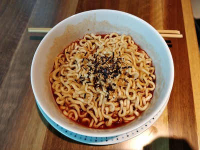

Yes, seriously. While making some instant ramen is as simple
as pouring hot water over your noodles and adding the seasoning
packet, this recipe aims to transform this boring dish into a tasty meal.
Add your noodles to boiling water and boil for
3 to 5 minutes. You may discard the seasoning
packet that came with it as it's not necessary for this dish.
Use a strainer or carefully pour out the water from the
pot and transfer the cooked noodles to a bowl.
Begin adding your ingredients in the amounts listed above.
Skip adding the meat for now.
Mix the ingredients with the noodles until all the noodles
are evenly coated. Add your meat on top and enjoy!